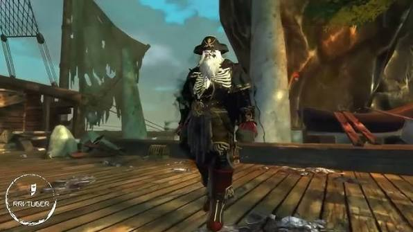

DUNGEON MECHANICS
PIRATE KING'S RETREAT
Clear the adds. Follow the route. Murder the pirate hierarchy.

OVERVIEW
PIRATE KING'S RETREAT
Pirate King's Retreat is a straightforward dungeon focused primarily on clearing enemy groups and defeating three bosses.
The first two bosses spawn large numbers of adds, while the final Pirate King encounter is a direct boss fight.
DUNGEON ROUTE
PIRATE HIDEOUT
- Follow the route through the hideout while clearing enemy groups.
- Pull the required wall levers to open the route forward.
- Continue clearing enemies until reaching the first boss area.
BOSS ONE
REDOLENT SURGEON
- The encounter begins with the boss surrounded by multiple adds.
- Use AoE damage to control the large number of enemies in the arena.
- Focus damage on the boss while keeping the adds under control.
- Additional adds spawn after the boss is defeated.
- Clear the remaining enemies before continuing through the dungeon.
DUNGEON ROUTE
ROPE BRIDGES
- Continue across the rope bridges while clearing pirate groups.
- Follow the route until reaching the hidden doorway.
- Activate the secret door to reach the second boss.
BOSS TWO
THICK GRISTLE
- Thick Gristle is another add-heavy encounter.
- Large numbers of enemies fight alongside the boss.
- AoE damage is useful for keeping the arena controlled.
- More adds spawn when the boss is defeated.
- Clear the remaining enemies before moving toward the final encounter.
FINAL ROUTE
THE PIRATE KING'S SHIP
- Continue following the route and clearing enemy groups.
- Make your way onto the Pirate King's ship.
- Gather the full party before beginning the final encounter.
FINAL BOSS
THE PIRATE KING
- Unlike the previous two bosses, the Pirate King does not spawn additional adds.
- The encounter is a straightforward single-target fight.
- Let the tank establish aggro and focus damage directly on the boss.
- Burn the Pirate King down to complete the dungeon.
QUICK REFERENCE
PIRATE KING'S RETREAT SURVIVAL NOTES
- Follow the route and activate required levers.
- First boss → expect lots of adds.
- Kill boss → clear the additional add wave.
- Cross the rope bridges and activate the secret door.
- Second boss → more bloody adds.
- Kill boss → clear the remaining adds.
- Final boss → no adds.
- Pirate King → tank him and burn him.